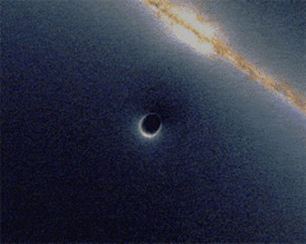

Buraco Negro
De acordo com a Teoria da Relatividade Geral, um buraco negro é uma região do espaço da qual nada, nem mesmo partículas que se movem à velocidade da luz,
podem escapar, pois a sua velocidade é inferior à velocidade de escape
desses corpos celestes infinitamente densos. Este é o resultado da
deformação do espaço-tempo,
causada após o colapso gravitacional de uma estrela massiva com pelo
menos 30 vezes a massa do Sol em uma supernova, e que logo depois,
desaparecerá, dando lugar ao que a Física chama de singularidade, o coração de um buraco negro, onde espaço-tempo deixa de existir. Um buraco negro começa a partir de uma superfície esférica denominada horizonte de eventos, que marca a região a partir da qual, se algo a atravessar, não poderá regressar. O adjetivo negro em buraco negro
se deve ao fato de que se presumia que este não refletia nenhuma parte
da luz que venha atingir seu horizonte de eventos, atuando assim como se
fosse um corpo negro
perfeito em termodinâmica, porém, atualmente existe a teoria da
radiação Hawking que, resumidamente, prevê que os buracos negros não são
realmente negros, e emitem radiação devido a efeitos quânticos, tais
como flutuações quânticas.
Acredita-se, também, com base na mecânica quântica, que os buracos negros emitam radiação térmica, da mesma forma que os corpos negros da termodinâmica a temperaturas finitas. Esta temperatura, entretanto, é inversamente proporcional à massa
do buraco negro, de modo que observar a radiação térmica proveniente
destes objetos torna-se difícil quando estes possuem massas comparáveis
às das estrelas. Apesar de serem praticamente invisíveis, pode-se detectar um buraco
negro pelo efeito de sua massa sobre o movimento de estrelas em uma dada
região do espaço-tempo. Pode-se também detectar um buraco negro pela radiação emitida quando sua intensa atração gravitacional atrai a materia de uma estrela companheira,
que se deforma em um anel giratório em torno do buraco negro, tal anel é
chamado de disco de acreção. A matéria em rotação acelera a uma
velocidade próxima a velocidade da luz, assim a mesma emite radiação por
ser aquecida a altas temperaturas. No final de 2015, pesquisadores do projeto LIGO (Laser Interferometer Gravitational-Wave Observatory) observaram "distorções no espaço e no tempo" causadas por um par de buracos negros com trinta massas solares em processo de fusão. Stephen Hawking, em 2016, declarou que já não pensava mais que aquilo que é sugado para um buraco negro é completamente destruído, ele acreditava que poderia haver um caminho para sair de um buraco negro através de um outro universo.
Caso Hawking esteja correto, ele estaria mencionando os buracos
de minhoca, e não os buracos negros, pois quando um buraco negro está
conectado a um buraco branco, esse conjunto passa a se chamar buraco de
minhoca, e a massa dos materiais que o buraco negro conseguir "devorar"
não será incorporada à ele, e sim expelida no buraco branco. Atualmente,
não existe qualquer prova da existência de buracos brancos.
Embora o conceito de buraco negro tenha surgido em bases teóricas, astrônomos têm identificado inúmeros candidatos a buracos negros estelares e também indícios da existência de buracos negros supermassivos no centro de galáxias. Mesmo com vários estudos e teorias, o buraco negro continua sendo um dos vários mistérios existentes ainda hoje. Há indícios de que no centro da própria Via Láctea, nas vizinhanças de Sagitário A*, deve haver um buraco negro com mais de 2 milhões de massas solares.
Em abril de 2019 o Event Horizon Telescope
divulgou os resultados das primeiras imagens de um buraco negro na
galáxia M87. As observações comprovaram as previsões de Einstein e a métrica de Kerr.
Primeira imagem de um buraco negro supermassivo na galáxia M87. |
|  Uma simulação de uma lente gravitacional por um buraco negro, distorcendo a imagem de fundo da Via Láctea (aumentar o tamanho). |
História
A ideia de um corpo massivo do qual nada pode escapar foi tida primeiro pelo geólogo John Michell em uma carta escrita para Henry Cavendish em 1783 para a Royal Society:
Se um semidiâmetro de uma esfera da mesma densidade do sol esta além do sol em uma proporção de 500 vezes, um corpo caindo de uma altura infinita para ele teria adquirido em sua superfície maior velocidade que a da luz e, consequentemente, supondo-se que a luz seja atraída pela mesma força em proporção ao sua inércia com outros organismos, toda a luz emitida por um corpo como este retorna em direção a ele por sua própria gravidade adequada.
— John Michell
Em 1796, o matemático Pierre-Simon Laplace promoveu a ideia mesmo na primeira e segunda edição do livro Exposition du système du Monde (que foi removido nas próximas edições). Mesmo as "estrelas negras (mecânica newtoniana)"
foi muitas vezes ignorada no século XIV, pois não era compreendido como
uma onda sem massa, como a luz, poderia influenciar na gravidade.
Relatividade
Em 1915, Albert Einstein desenvolveu a teoria da relatividade geral, tendo sempre apresentado que a gravidade pode influenciar no movimento da luz. Pouco tempo depois, Karl Schwarzschild fez um sistema de unidades: Sistema métrico de Schwarzschild para as equações de campo de Einstein, onde é descrito o campo gravitacional de um ponto de massa e a massa esférica. Poucos meses depois de Schwarzschild, Johannes Droste, um estudante de Hendrik Lorentz, independentemente deu a mesma solução para o ponto de massa e escreveu mais extensamente sobre suas propriedades. Esta solução tem um funcionamento que é chamado de raio de Schwarzschild, tornando-se singularidade matemática, o que significa que alguns dos termos nas equações de Einstein são infinitos. A natureza dessa superfície não era bem compreendida na época. Em 1924, Arthur Eddington mostrou que a singularidade desapareceu depois de uma mudança de coordenadas, embora tenha demorado até 1933 para que Georges Lemaître percebesse que isso significava a singularidade no raio de Schwarzschild, e,não era uma propriedade física, mas matemática, a partir da descoberta da singularidade matemática.
Em 1931, Subrahmanyan Chandrasekhar calculou, usando a relatividade restrita, que um corpo não-rotativo de elétron de matéria degenerada acima de uma certa massa limite (hoje chamada de limite de Chandrasekhar de 1,4 massas solares) não tem soluções estáveis. Seus argumentos sofreram a oposição de muitos de seus contemporâneos como Eddington e Lev Landau, que argumentaram que algum mecanismo ainda desconhecido iria parar o colapso. Eles estavam parcialmente corretos: uma anã branca com massa ligeiramente superior ao limite de Chandrasekhar entrará em colapso em uma estrela de nêutrons, que é ela própria estável por causa do princípio de exclusão de Pauli. Mas em 1939 Robert Oppenheimer e outros previram que estrelas de nêutrons acima de aproximadamente três massas solares (o limite de Tolman-Oppenheimer-Volkoff) entrariam em colapso em buracos negros pelas razões apresentadas por Chandrasekhar, concluindo que nenhuma lei da física era suscetível de intervir e parar pelo menos algumas estrelas do colapso para buracos negros.
Ausência de singularidade central de acordo com outras teorias
Em 10 de dezembro de 2018, Abhay Ashtekar, Javier Olmedo e Parampreet Singh publicaram um artigo científico no campo da teoria da gravidade em laço demonstrando a ausência de singularidade central no buraco negro, sem especificar geometricamente o futuro da matéria neste ponto enquanto o modelo Janus propõe uma explicação.[27][28][29] Este novo estudo apresenta as mesmas conclusões que as obtidas em trabalhos anteriores baseados na relatividade geral.
Era áurea
Em 1958, David Finkelstein identificou a superfície de Schwarzschild como um horizonte de eventos, "uma membrana um perfeito unidirecional": as influências causais podem atravessá-lo em uma única direção". Isto não, estritamente, contradizem os resultados de Oppenheimer, mas estendeu-os a incluir o ponto de vista de observadores. À Solução Finkelstein estenderam a solução de Schwarzschild para o futuro de observadores cair em um buraco negro. A extensão completa já haviam sido encontrados por Martin Kruskal, que foi publicador desta descoberta.
Primeiro registro
No dia 10 de abril de 2019, o ESO junto a um grupo de observatórios de rádio publicou os resultados de uma observação feita a partir de 9 radiotelescópios ao redor do mundo que juntos criaram um telescópio virtual com o diâmetro da Terra. Imagens registradas em ondas de rádio em 2017 revelaram o horizonte de eventos e o disco de acreção ao redor do buraco negro supermassivo, com massa de 6,5 bilhões de vezes a do sol, localizado no centro da galáxia Messier 87, no aglomerado de virgem a 55 milhões de anos luz da Terra.
 Galáxia NGC 1277 como mostra a referência em relação às outras galáxias na Via Láctea. |
Foto de alta resolução tirada pelo Telescópio Espacial Hubble da galáxia NGC 1277 que mostra o buraco negro supermassivo descoberto em 2012. |
Hipernova. |
O buraco negro da NGC 1277
A descoberta
Em 2012, o buraco negro mais massivo foi descoberto por um grupo de astrônomos com massa equivalente à massa de 17 bilhões de sóis. A galáxia NGC 1277 (que só tem um quarto do tamanho da Via Láctea) abriga um buraco negro 4.000 vezes maior do que a formação que se localiza no centro da Via Láctea — o buraco negro conhecido como Sagitário A.
Normalmente, um buraco negro tão enorme só seria encontrado em uma galáxia muito maior, o que sugere algo incomum no passado da NGC 1277. Na verdade, o buraco negro pode ser o que restou de uma galáxia ainda maior que fica nas proximidades. Há bilhões de anos, duas galáxias — cada uma carregando um buraco negro em seu núcleo — se chocaram para formar uma galáxia massiva chamada de NGC 1275. Durante a colisão, os buracos negros centrais se atraíram, se fundiram, e recuaram para o espaço intergalático. O recém-nascido buraco negro sem casa vagou pelo aglomerado galáctico de Perseu até a NGC 1277 passar perto o suficiente para atraí-lo gravitacionalmente.
A descoberta contradiz os atuais modelos de crescimento dos buracos negros, que sustentam que eles evoluem juntamente com as galáxias em que se encontram. Medir a massa de buracos negros é um processo complicado. Para fazer isso, os astrônomos observam sua "esfera de influência" — ou os efeitos gravitacionais que eles provocam nas nuvens de gás e nas estrelas que estão a sua volta.
Formação
Acredita-se que haja uma dessas formações no centro de todas as grandes galáxias. A galáxia NGC 1277 está a 220 milhões de anos-luz de distância da Terra, mas aparece nas imagens de alta resolução feitas pelo telescópio Hubble.
A equipe descobriu que o buraco negro da NGC 1277 era tão grande quanto o nosso Sistema Solar e concentrava cerca de 14% da massa de sua galáxia.
"Essa é a única maneira em que você poderia ter esse padrão de dispersão das estrelas: com um buraco negro muito grande (no centro da galáxia NGC 1277)", disse Van den Bosch.
Vantagem da descoberta
A observação da NGC 1277 poderia ajudar os astrônomos a entenderem como os buracos negros evoluem.
"Essa galáxia parece ser muito antiga", disse o Van den Bosch. "De
alguma forma, seu buraco negro cresceu rapidamente há muito tempo, mas
desde então está estabilizado, sem formar mais estrelas."
Formação e estrutura
Formação
Um buraco negro forma-se quando uma estrela super maciça fica sem
combustível, o que faz seu núcleo diminuir até ficar reduzido a uma
fração de seu tamanho original. Quando isso acontece, a gravidade
produzida por ela sai do controle e começa a sugar tudo que encontra.
Ela começa a sugar a massa da estrela, fazendo isso tão rápido que se
engasga e expele enormes torrentes de energia. Ela é tão forte que fura a
estrela e lança mais jatos de energia. A gravidade não suporta essa
energia e a estrela, nem sempre, mas muitas vezes explode (esta explosão é chamada de supernova).
Em apenas um segundo a explosão é capaz de gerar 100 vezes mais energia
que o nosso Sol produzirá em toda sua existência. O que resta no centro
é o buraco negro.
Esta explosão também é conhecida como Erupção de raios gama ou explosão de raios gama. A maioria das estrelas de classe W (Wolf-Rayet stars ou, em português, estrelas Wolf-Rayet) morrem nestas explosões.
Visão simulada de um buraco negro em frente a Grande Nuvem de Magalhães. A razão entre o raio de Schwarzschild do buraco negro e a distância do observador é 1:9. |